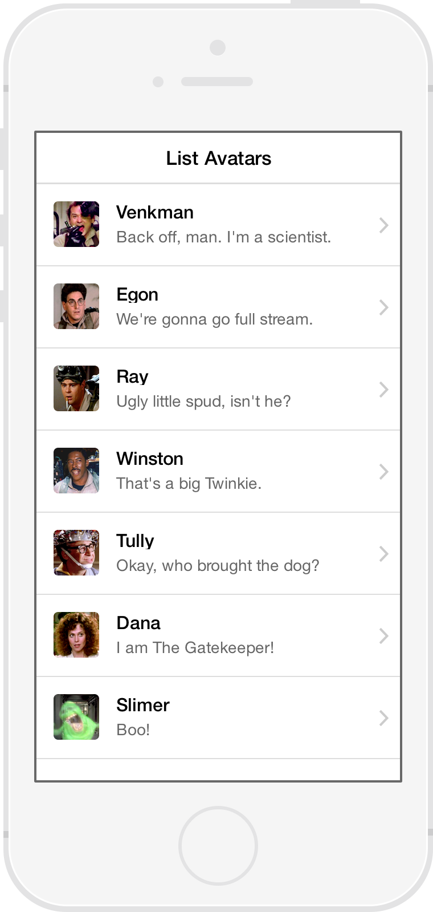

The beautiful, open source front-end framework for developing hybrid mobile apps with HTML5.
ionicframework.com
Current Mobile Landscape
Objective C iPhone, iPad, App
Java Android and Other Google Devices
C# Windows Phone & Windows 8
Multiple Code Bases.
Multiple Platforms.
Why are we still coding for multiple platforms?
“Because HTML5 isn't ready!! Right?!”
It's not 2007 anymore
- We now have incredibly fast devices
- Massively improved APIs
- Browsers actually implementing standards
“So... jQuery Mobile?”
jQuery Mobile Pros
- Works on legacy mobile phones (Blackberry 4)
- Progressive enhancement
jQuery Mobile Cons
- Heavy DOM manipulation
- Designed for mobile websites, not apps
- Clashes with MVC Frameworks
- Doesn't play well with Phonegap/Cordova
“Sencha, Kendo UI, Appcelerator?”
Beware of...
- Technology lock-in
- Complex Licensing
- Not web-based
- High Costs
“BUT BOOTSTRAP!”
Apples to Oranges
- Desktop legecy
- Too heavy
- 300ms delay
- Responsive !== mobile app
- Not a mobile UI kit
- Zero application logic
What's Missing?
- A true Open Source Licensed Framework
- Bridges the gap between web and native
- Logic that communicates with the UI
- Comprehensive UI components and interactions
- A community spirit
“Hello.”
Web Technologie You Already Know and Love
- HTML5
- CSS3
- JavaScript
HTML5 that acts like native
- Web wrapped in native layer
- Direct access to native APIs
- Cordova/Phonegap
Performance Obsessed
- Hardware accelerated animations
- Minimal DOM Manipulation
- Zero jQuery
Native Focused
- Modeled Off Of Native SDKs
- Built to work with Cordova/Phonegap
Beautifully Designed
- Cohesive visual system
- Clean and Simple
- Easy to customize
Best Friends With AngularJS
- UI Components are AngularJS Directives
- Ready to work with your logic system
Core Components

Lists

Complex Lists

Tabs

Side Menu

Slide Box

Action Sheet

Pull to Refresh
History & Navigation
Ionicons

Over 500 MIT licensed font-icons included
Built By Nerds
MIT License
Pretty Code
function linkify( selector ) {
if( supports3DTransforms ) {
var nodes = document.querySelectorAll( selector );
for( var i = 0, len = nodes.length; i < len; i++ ) {
var node = nodes[i];
if( !node.className ) {
node.className += ' roll';
}
}
}
}